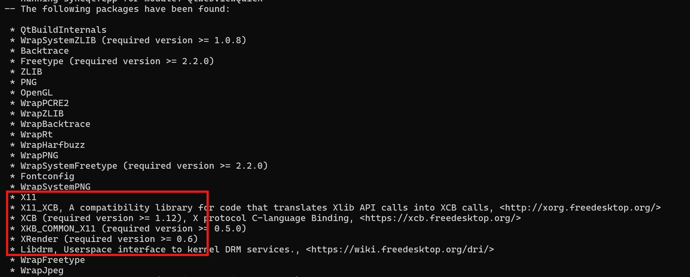

使用 CMake 编译 Qt 6.5
由于 qt6 开始使用 CMake 作为默认的编译配置框架，在原有的编译文章基础上新增了改文章
编译机器的版本低一点的话，兼容性会好很多，所以本文使用 Ubuntu 20.04 系统环境编译
基础工具
- cmake
- gcc
- g++
- make
- python3
- python3-pip
本机编译
安装依赖
现在 Ubuntu 等系统以及从 x11 切换到 Wayland 了，同时提供编译 Wayland 的方法
Wayland 只支持 OpenGL ES；不支持 OpenGL
Qt 库
# opengl
apt install mesa-common-dev -y
# 字体
apt install libfontconfig1-dev libfreetype6-dev -y
# alsa开发库及其工具
apt install libasound2-dev alsa-utils -y
# pulseaudio开发库及服务
apt install libpulse-dev pulseaudio -y
# 键盘
apt install libxkbcommon-dev -y
# xcb QPA 的依赖 按照qt文档来就OK https://doc.qt.io/qt-6.5/linux-requirements.html
apt install libinput-dev -y
apt install libxcb-xinput-dev -y
apt install libx11-dev -y
apt install libx11-xcb-dev -y
apt install libxext-dev -y
apt install libxfixes-dev -y
apt install libxi-dev -y
apt install libxrender-dev -y
apt install libxcb-cursor-dev -y
apt install libxcb-glx0-dev -y
apt install libxcb-keysyms1-dev -y
apt install libxcb-image0-dev -y
apt install libxcb-shm0-dev -y
apt install libxcb-icccm4-dev -y
apt install libxcb-sync-dev -y
apt install libxcb-xfixes0-dev -y
apt install libxcb-shape0-dev -y
apt install libxcb-randr0-dev -y
apt install libxcb-render-util0-dev -y
apt install libxcb-util-dev -y
apt install libxcb-xinerama0-dev -y
apt install libxcb-xkb-dev -y
apt install libxkbcommon-x11-dev -y
# Wayland
apt install libwayland-dev libwayland-egl-backend-dev
# opengles2
apt install libgles2-mesa-dev
QtWebEngine
如果不需要 QtWebEngine，直接跳过这一章
ubuntu 20 apt 直接安装的 cmake 和 nodejs 的版本达不到要求，手动安装
cmake >= 3.19 https://cmake.org/download/
nodejs >= 12 https://nodejs.org/en/download/prebuilt-binaries
pip3 install html5lib
apt install ninja-build bison flex gperf libnss3-dev libdbus-1-dev libcups2-dev -y
# x11 需要的
apt install libxcursor-dev libxcomposite-dev libxrandr-dev libxtst-dev libxshmfence-dev libxkbfile-dev libxdamage-dev -y
QtDoc
不需要文档的可以跳过，这玩意挺大的
apt install libclang-dev clang -y
文档如果配置成功，需要单独编译
cmake --build . --target docs -j$(nproc)
还需要手动拷贝到安装目录下
cp -ar doc/* /opt/qt6.5/doc
编译
mkdir build && cd build
cmake .. -DCMAKE_INSTALL_PREFIX=/opt/qt6.5
cmake --build . -j$(nproc)
cmake --install .
请确保如下配置出现在 have been found，不然带界面的程序在 x11 起不来

如果是 Wayland，请确认有以下带 EGL yes 的输出
Qt Wayland Drivers:
EGL .................................... yes
Raspberry Pi ........................... no
DRM EGL ................................ yes
libhybris EGL .......................... no
Linux dma-buf server buffer integration yes
Shm emulation server buffer integration yes
Vulkan-based server buffer integration . no
交叉编译
从 qt6 开始，交叉编译必须要有对应的主机版本；如果要交叉编译 WebEngine，那主机版本也必须要有 WebEngine
sysroot 及工具链
请参考 交叉编译 Qt5.12
arm 工具链没编译成功，因为Arm 提供的工具链没有配置 multiarch，不会去 aarch64-linux-gnu 目录下找头文件和库文件
这里下载的是 linaro 的 11.3 版本工具链：下载链接
本机安装工具
如果是先编译的本机版本，之前安装的工具都够了，不需要额外安装了
Qt 库
交叉编译时候，本机不需要额外的工具
QtWebEngine
如果不需要 QtWebEngine，直接跳过这一章
cmake >= 3.19 https://cmake.org/download/
nodejs >= 12 https://nodejs.org/en/download/prebuilt-binaries
pip3 install html5lib
apt install libglib2.0-dev ninja-build bison flex gperf libnss3-dev libdbus-1-dev libcups2-dev -y
编译
工具链文件
include_guard(GLOBAL)
set(CMAKE_SYSTEM_NAME Linux)
set(CMAKE_SYSTEM_PROCESSOR aarch64)
set(CMAKE_SYSROOT "/root/ubuntu")
list(APPEND CMAKE_PREFIX_PATH "/usr/lib/aarch64-linux-gnu" "/usr/lib/aarch64-linux-gnu/cmake")
set(CMAKE_C_COMPILER /opt/gcc-linaro-11.3.1-2022.06-x86_64_aarch64-linux-gnu/bin/aarch64-linux-gnu-gcc)
set(CMAKE_CXX_COMPILER /opt/gcc-linaro-11.3.1-2022.06-x86_64_aarch64-linux-gnu/bin/aarch64-linux-gnu-g++)
set(CMAKE_FIND_ROOT_PATH_MODE_PROGRAM NEVER)
set(CMAKE_FIND_ROOT_PATH_MODE_LIBRARY ONLY)
set(CMAKE_FIND_ROOT_PATH_MODE_INCLUDE ONLY)
set(CMAKE_FIND_ROOT_PATH_MODE_PACKAGE ONLY)
add_link_options("LINKER:-rpath-link,/root/ubuntu/usr/lib/aarch64-linux-gnu")
编译命令
# 指定pkg-config查找路径
export PKG_CONFIG_PATH=/root/ubuntu/usr/lib/pkgconfig:/root/ubuntu/usr/lib/aarch64-linux-gnu/pkgconfig:/root/ubuntu/usr/share/pkgconfig
mkdir build && cd build
cmake .. -DCMAKE_INSTALL_PREFIX=/opt/qt6.5_aarch64 -DQT_HOST_PATH=/opt/qt6.5 -DCMAKE_TOOLCHAIN_FILE=/root/qt-cross-aarch64.cmake --log-level=STATUS -DINPUT_opengl=es2
cmake --build . -j$(nproc)
cmake --install .
如果需要编译 arm 版本的 uic 等工具，需要加上 -DQT_FORCE_BUILD_TOOLS=ON 选项
6.5.3 有一个 bug，已经合并到主干了：
问题单 https://bugreports.qt.io/browse/QTBUG-117974
解决方案 https://codereview.qt-project.org/c/qt/qttools/+/510787
QEMU
还有一种方案就是在 QEMU 内部按照本机编译流程编译：好处是配置简单，不用配置交叉编译工具链，但是编译速度巨慢（多花了将近20倍时间）
参考链接
由于个人水平有限，文中若有不合理或不正确的地方欢迎指出改正